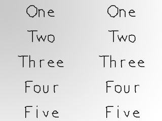
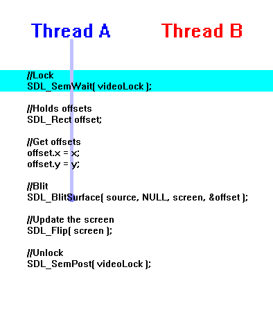
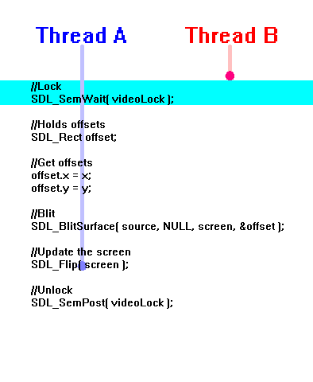
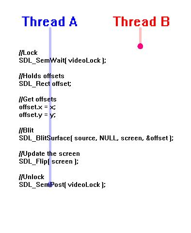
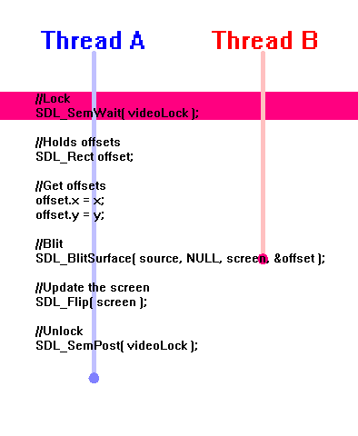

编者注：学霸出没请注意！本课教程由某某学霸翻译，详见页脚。

当多个线程同时运行时你必须确保它们不会在同一时间操作同一份数据，这一课我们将学习使用信号量来预防线程间的相互冲突。
首先声明，在这里我们会实现视频多线程播放。实践中你绝不会这样，这是一种不良的设计，有时甚至导致你的系统动荡。我们用到它是因为在这里它只是一个稳定的小玩意，用以演示信号量的操作。
现在让我们回到主题上来，下面程序中的两个线程将会同时进行表面位块传输并更新屏幕。两个线程同时对同一数据进行操作是很危险的隐患，这时就要用到信号量了，信号量将会只允许其中一个线程对屏幕进行操作。
现在让我们回到主题上来，下面程序中的两个线程将会同时进行表面位块传输并更新屏幕。两个线程同时对同一数据进行操作是很危险的隐患，这时就要用到信号量了，信号量将会只允许其中一个线程对屏幕进行操作。
//将要用到的线程 SDL_Thread *threadA = NULL; SDL_Thread *threadB = NULL; //保护性的信号量 SDL_sem *videoLock = NULL;
程序最上方定义了两个将用到的线程和一个相关的信号量。
bool init()
{
//初始化所有SDL子系统
if( SDL_Init( SDL_INIT_EVERYTHING ) == -1 )
{
return false;
}
//设置屏幕
screen = SDL_SetVideoMode( SCREEN_WIDTH, SCREEN_HEIGHT, SCREEN_BPP, SDL_SWSURFACE );
//如果设置屏幕出错
if( screen == NULL )
{
return false;
}
//初始化SDL_ttf
if( TTF_Init() == -1 )
{
return false;
}
//创建信号量
videoLock = SDL_CreateSemaphore( 1 );
//设置窗口标题
SDL_WM_SetCaption( "Testing Threads", NULL );
//如果一切初始化良好
return true;
}
信号量在使用之前必须使用
你也许会对1这个参数感到疑问，后面会解释。
SDL_CreateSemaphore()创建。
你也许会对1这个参数感到疑问，后面会解释。
int blitter_a( void *data )
{
//Y坐标
int y = 10;
//遍历表面
for( int b = 0; b < 5; b++ )
{
//等待
SDL_Delay( 200 );
//显示表面
show_surface( ( ( SCREEN_WIDTH / 2 ) - text[ b ]->w ) / 2, y, text[ b ] );
//向下移动
y += 100;
}
return 0;
}
int blitter_b( void *data )
{
//Y坐标
int y = 10;
//遍历表面
for( int b = 0; b < 5; b++ )
{
//等待
SDL_Delay( 200 );
//显示表面
show_surface( ( SCREEN_WIDTH / 2 ) + ( ( ( SCREEN_WIDTH / 2 ) - text[ b ]->w ) / 2 ), y, text[ b ] );
//向下移动
y += 100;
}
return 0;
}
上面是线程的函数。它们都是传递一组表面并让其显示在屏幕上。
可以发现，我们并没有使用平时的
接着我们让多线程同时运行，同时要防止它们同时操作屏幕。为此我们用到信号量来保护
blitter_a()传递表面至屏幕左侧，blitter_b()在右侧。
可以发现，我们并没有使用平时的
apply_surface()函数，而是show_surface()，一个修改过的apply_surface()函数。它将SDL_BlitSurface()提交表面和SDL_Flip()更新屏幕实现在一个函数内。待会你会见识到。
接着我们让多线程同时运行，同时要防止它们同时操作屏幕。为此我们用到信号量来保护
show_surface()函数。
void show_surface( int x, int y, SDL_Surface* source )
{
//锁定
SDL_SemWait( videoLock );
//保存坐标
SDL_Rect offset;
//获取坐标
offset.x = x;
offset.y = y;
//Blit
SDL_BlitSurface( source, NULL, screen, &offset );
//更新屏幕
SDL_Flip( screen );
//解锁
SDL_SemPost( videoLock );
}
这里show_surface()函数将会传递位表面然后更新屏幕。在头尾分别是
当另一个线程尝试进入时，它必须等待：
直到
然后下一个线程执行并锁上信号量：
因为
之前提到过
SDL_SemWait()和SDL_SemPost()。
SDL_SemWait()用来锁上信号量：

当另一个线程尝试进入时，它必须等待：

直到
SDL_SemPost()被调用解锁信号量：

然后下一个线程执行并锁上信号量：

因为
SDL_BlitSurface()和SDL_Flip()受信号量保护，所以同一时间只有一个线程能够调用视频函数，不会发生冲突。
之前提到过
init()函数中SDL_CreateSemaphore()的参数1，1代表信号量上锁前最多能有几个线程通过。我们也可以让2个线程通过，这里不再示例。大多数时候信号量上锁前，都只会让一个线程执行。
//显示背景
show_surface( 0, 0, background );
//创建并运行线程
threadA = SDL_CreateThread( blitter_a, NULL );
threadB = SDL_CreateThread( blitter_b, NULL );
//等待线程结束
SDL_WaitThread( threadA, NULL );
SDL_WaitThread( threadB, NULL );
//当用户还没退出
while( quit == false )
{
//如果有事件需要处理
if( SDL_PollEvent( &event ) )
{
//如果用户叉掉了窗口
if( event.type == SDL_QUIT )
{
//退出程序
quit = true;
}
}
}
在
然后我们运行两个线程并且通过
main()线程中，所有东西加载和初始完毕后，背景会呈现在屏幕上。
然后我们运行两个线程并且通过
SDL_WaitThread()来等待线程结束。线程结束后再等待用户的退出。
void clean_up()
{
//清除信号量
SDL_DestroySemaphore( videoLock );
//释放表面
SDL_FreeSurface( background );
//释放文本
for( int t = 0; t < 5; t++ )
{
SDL_FreeSurface( text[ t ] );
}
//关闭字体
TTF_CloseFont( font );
//退出SDL_ttf
TTF_Quit();
//退出SDL
SDL_Quit();
}
不要忘记使用完后清除信号量。
使用
使用
SDL_DestroySemaphore()函数可以清除信号量。